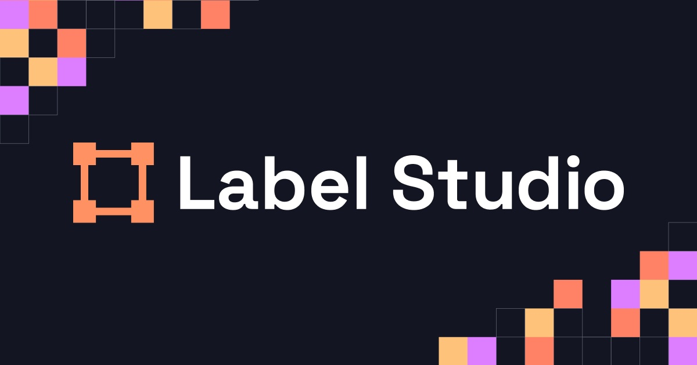

Advantages of open source
The main advantage of using open source is that it is for free but there are many others ...
Loading...
The main advantage of using open source is that it is for free but there are many others ...
A crucial disadvantage of open source is the lack of dedicated support and maintenance.

Label Studio is a powerful tool for data labeling and annotation.